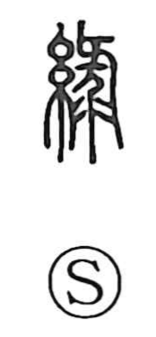

緑

Uncategorized
Kun: midori | On: ryoku, roku
green ・ green color
Explanation
緑 is a phono-semantic character. Its original form 綠 combines the silk radical (糸), pointing to dyed silk, with the phonetic element 彔 (read roku), which supplies the sound. The Shuowen defines it as “silk of a blue–yellow hue,” a tone between blue‑green and yellow—the shade Japanese call midori, an emerald-like green. Early literature already uses it this way, as in the Book of Odes poem Lü Yi (“Green Clothes”): “Green is the upper robe, green with a yellow lining,” confirming its association with the color and with the world of textiles.